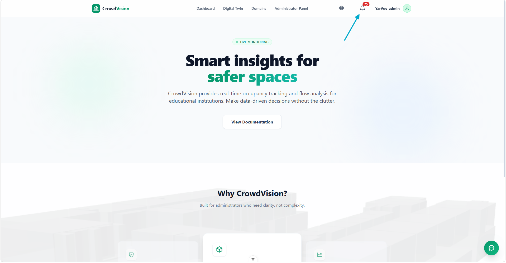
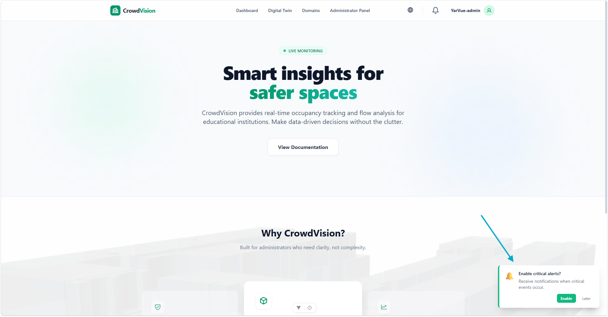

/
User Guide
CrowdVision watches incoming sensor data for you and delivers alerts through two independent channels: an in-app feed for when you are using the app, and browser push for when you are away.
The bell in the top navigation bar is your real-time alert feed. When an alert arrives while the app is open, the bell turns red and shows a count of unread alerts. Click it to see recent alerts, each with the event type, the affected building, and a timestamp.

Figure 1 — The notification bell shows a live count and, when opened, the recent alerts.
The bell also shows your connection state:
Push notifications reach you even when the tab is closed or minimised — your operating system shows the alert like an email or messaging app would.

Figure 2 — Your browser asks permission the first time you enable push for a domain.
Push registration is per browser: enable it on each device or browser you use.
You can revoke permission anytime in your browser’s site settings. The next alert sent to that device detects the change and cleans up the registration automatically.
Notification preferences are per domain — you can receive alerts for one organization and mute another. In the domain settings, toggle Temperature Alerts for any domain. The change saves immediately.